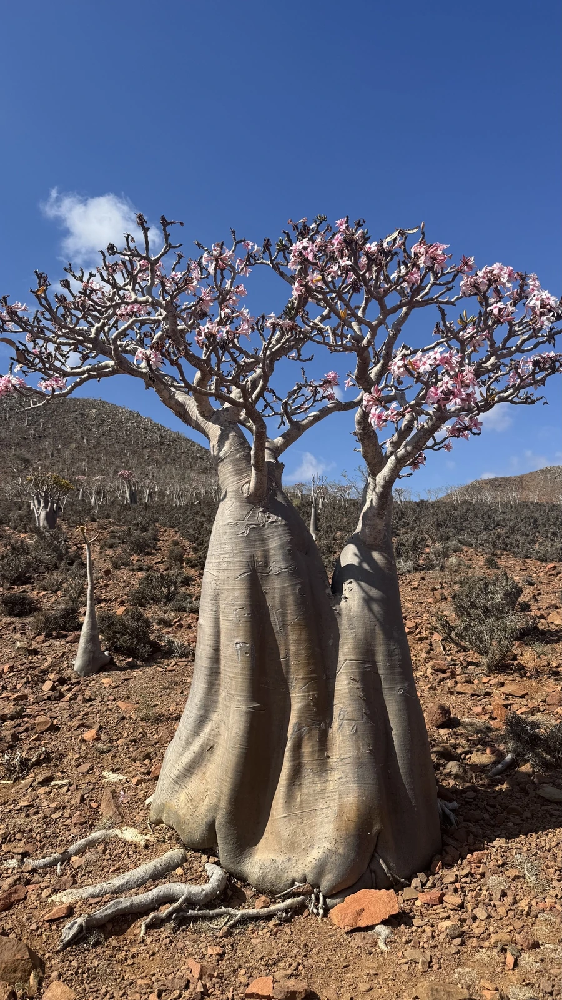

多肉植物 · 植物界
沙漠玫瑰 Adenium obesum

夹竹桃科天宝花属多肉，基部膨大如酒瓶，夏季开出喇叭状红花，原产非洲与阿拉伯半岛，是著名的块根观赏植物。
- 分类
- 门被子植物门纲木兰纲目龙胆目科夹竹桃科属天宝花属
- 栖息环境
- 非洲东部与阿拉伯半岛的干旱灌丛和石质坡地
- 地理分布
- 原产非洲东部及阿拉伯半岛，世界各地盆栽观赏
- 保护级别
- 暂无评估；CITES 附录Ⅱ
物种志
沙漠玫瑰为夹竹桃科天宝花属的多年生肉质灌木，株高 1–2 米，基部膨大呈酒瓶状，树皮灰绿色，分枝粗壮。叶片倒卵形，长 5–10 厘米，革质，簇生于枝顶。花漏斗状，直径 4–6 厘米，有红、粉、白等色，花期夏季至秋季；果实为蓇葖果，种子带毛。
沙漠玫瑰原产非洲东部与阿拉伯半岛的干旱地区，喜阳光充足、温暖干燥和通风良好的环境，耐旱、怕积水和低温。它基部膨大，能储存水分，是典型的块根多肉植物，花朵艳丽，适合盆栽观赏。栽培用排水良好的颗粒土，生长期干透浇透，冬季保持 10℃ 以上并控水；繁殖以播种和扦插为主。植株汁液有毒，修剪时应避免接触皮肤和眼睛。
形态与习性
- 株高1–2 米，基部膨大如酒瓶
- 基部膨大储水，树皮灰绿色
- 花期夏季至秋季，花漏斗状
- 光照极喜光，需充足日照
- 水分耐旱，干透浇透
- 土壤排水良好的颗粒土
- 繁殖播种、扦插
- 注意汁液有毒，修剪戴手套
趣味知识
- 沙漠玫瑰基部膨大如酒瓶，能储存水分度过旱季。
- 它原产非洲东部和阿拉伯半岛，喜热怕冷，冬季需保温。
- 植株汁液有毒，修剪时应戴手套并避免接触眼睛。